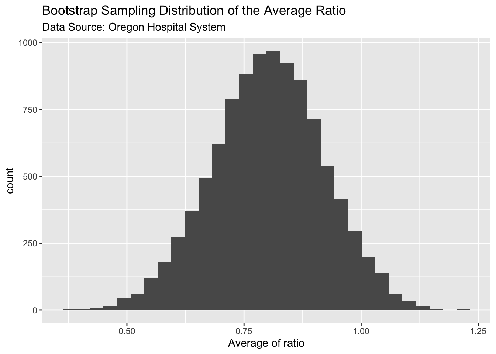

4 The Bootstrap Method
In short, the Bootstrap is a technique that we can use to get an idea about the sampling distribution of a statistic. It helps us to calculate the variability (standard error) of that statistic and also give us important clues about the shape of its TRUE sampling distribution.
In addition, the Bootstrap method is a easy to use alternative to construct confidence intervals for population parameters especially when classical theory (which based on the Central Limit Theorem) is questionable or does not apply.
In summary, it is another (useful) tool in our toolbox. But, it is NOT necessarily a `better’ tool. It depends on what we mean by ‘better’. In this chapter we will explore the pros and cons of this new method. Let’s dive it.
4.1 Bootstrap Sampling Distribution
What we normally see is a sample from the above population which may look like this:

The sample mean is:
## [1] 22.04726But, we’d like to know how accurate this estimate is. That is, we would like to know the standard error. In this case, the sample statistic is quite simple. It is the sample average \(\bar x\). We know how to find the standard error of this statistics using the \(Var(\cdot)\) operator (Refer to you HW in Chapter 2). Here is the answer:
## [1] 4.016029We also learned in Chapter 2 that the standard error is nothing but the spread (std. dev) of the sampling distribution of \(\bar x\). Is there a way to find the sampling distribution of \(\bar x\)?
Unfortunately, as we discussed in Chapter 2, it is not possible to find the sampling distribution of a statistic. This is where the bootstrap method comes in handy. Here is how we use it.
What we have:
A single random sample from the population. In this case a sample of size \(n=30\).
What we assume:
This sample is a good enough representation of the population. In other word, the shape and spread of this sample is similar to the population.
We then proceed as if this sample is our “population”. The rest of the steps is almost identical to what we had in Chapter 2, when we build the sampling distribution of \(\bar x\).
Take a random sample of size \(n\) (30 in this case) from this sample with replacement and calculate (and store) the statistic we want. Doing the sampling with replacement is the crucial point here. If we did not replace the data points, we will end up with the sample. For example, if our sample is (1,2,3), a resample with replacement looks like this: (2,2,3). Another resample might be (1,1,1). Since the sampling is done with replacement, we call these new samples bootstrap samples.
Then take another bootstrap random sample of the same size as above and calculate (and store) the statistic we want.
Repeat this process a large number of times. This will give us a collection of values for the statistic. We call these ‘bootstrap sample statistics’. For example, if we studying the sample mean \(\bar x\) we will have a bunch of bootstrap sample means corresponding to each of the bootstrap samples.
Plot these bootstrap sample statistics in a histogram. This will give us a graphical representation of the variance of the statistic.
The following plot shows the bootstrap sampling distribution of \(\bar x\) constructed out of the above random sample.
One of the main reasons that we use the Bootstrap method is to get an idea of the uncertainty of our sample mean (\(\bar x\)). In our case, the sample mean was 22.01. But we wanted to find the uncertainty of this estimate which is nothing but the spread of the true sampling distribution of \(\bar x\). Since the bootstrap sampling distribution is an approximation of the true sampling distribution, we can calculate the spread of the bootstrap sampling distribution to get an estimate of the true standard error. As the table below shows, this method is extremely accurate.
| True SE | Bootstrap SE |
|---|---|
| 4.01 | 3.95 |
Copy and paste the following R commands in R Studio to open an app to experiment with this data so that you can convince yourself that the Bootstrap SE is a reasonable estimate of the true SE.
After experimenting with the app you must be (hopefully) convinced that the Bootstrap method provides an alternative to find the standard error of a statistic. But, you might wonder why do we need an alternative when we already know how to find it theoretically. The reason is, sometimes (in fact in many real life cases), the statistic we are interested in is a more complicated one. Consider the following example:
The sample correlation coefficient (\(r\)) for this data is 0.88. As before, we would like to know the standard error (SE) of this statistic. The sample correlation coefficient is defined as \[ r = \frac{\sum_{i=1}^n (x_i - \bar x)(y_i - \bar y) }{sd_x sd_y}\]
It is virtually impossible to find the variance (\(Var[ \ r\ ]\)) of the above expression. Note that ratios of random variables are notoriously difficult to handle. But we can use the Bootstrap method to find an estimate of the SE using the Bootstrap sampling distribution of the correlation coefficient, \(r\). The following plot shows the Bootstrap sampling distribution of \(r\) from the above dataset.
Based on this analysis we can say the following about the sleep v. GPA data:
| True correlation | Sample correlation (\(r\)) | True Standard Error | Bootstrap Standard Error |
|---|---|---|---|
| We’ll never know | 0.88 | Very Difficult to find | 0.035 |
One thing to stress here is that, we would never know the true correlation or its variance. However, the above table provides a better understanding of what it might be. It tells us that the sample correlation is 0.88 but the uncertainly is on average, about 0.035 units. Hopefully, this example will convince you to believe the utility of the Bootstrap method as technique to find the standard error of any statistic. Simply create the bootstrap sampling distribution and find its spread (standard deviation). To drive this point, let us look at another example.
Example 4.3 This was a study on in-hospital deaths from myocardial infarction with ST elevation (STEMI) which was done in Oregon. Summary stats of the study is as follows:
- 9 hospitals in the Providence Health system in Oregon.
- Study period : from 2002 to 2003.
- 913 STEMI patients treated, of whom 105 died (in-hospital deaths) from myocardial infarction with ST elevation (STEMI).
- Each patient was assigned a Thrombolysis in Myocardial Infarction Risk Scores
The following table contains data grouped by risk score. In addition, information about the national mortality rate for each risk category is also given.
| Risk_score | Patients | Deaths | NRMI_Mortality_in_percents |
|---|---|---|---|
| 0 | 34 | 0 | 0.17 |
| 1 | 75 | 0 | 0.67 |
| 2 | 88 | 1 | 1.70 |
| 3 | 73 | 1 | 2.88 |
| 4 | 91 | 4 | 5.32 |
| 5 | 110 | 11 | 9.43 |
| 6 | 94 | 19 | 14.12 |
| 7 | 70 | 19 | 18.86 |
| 8 | 51 | 8 | 19.93 |
| 9 | 47 | 12 | 24.30 |
| 10 | 31 | 6 | 26.22 |
| 11–14 | 21 | 7 | 33.42 |
| No score | 128 | 17 | 14.42 |
Overall Question: How “good” is this hospital system (in terms of death rates) compared to the national level?
How could we begin to answer this question? You might suggest to look at the expected deaths IF the mortality rate for the hospital system is the same as the national rate. For example, for risk level 5, the expected number of deaths is \(110*9.43\% \ = 10.37\), which is not that different from the actual death count of 11. If we do this for all risk levels we get a column of expected deaths. From that we can look at the difference between the observed and the expected deaths. But, there is a problem in this approach. Consider the following two cases:
| Case 1 | Case 2 |
|---|---|
| Observed = 10 | Observed = 100 |
| Expected = 5 | Expected = 95 |
In both cases, the difference is 5, but we can all agree that a deviation of 5 is more severe in Case 1 than it is in Case 2. A better approach is to look at the ratio between the observed and the expected counts as shown below:
| Risk_score | Deaths | Expected.Deaths | OEratio |
|---|---|---|---|
| 0 | 0 | 0.058 | 0.000 |
| 1 | 0 | 0.503 | 0.000 |
| 2 | 1 | 1.496 | 0.668 |
| 3 | 1 | 2.102 | 0.476 |
| 4 | 4 | 4.841 | 0.826 |
| 5 | 11 | 10.373 | 1.060 |
| 6 | 19 | 13.273 | 1.431 |
| 7 | 19 | 13.202 | 1.439 |
| 8 | 8 | 10.164 | 0.787 |
| 9 | 12 | 11.421 | 1.051 |
| 10 | 6 | 8.128 | 0.738 |
| 11–14 | 7 | 7.018 | 0.997 |
| No score | 17 | 18.458 | 0.921 |
If the death rates in this hospital system is about the same as the national rate, then we would expect these ratios to be close to 1 and hence the average of these difference should be close to 1. For this data, the mean of these ratios is 0.8 (0.7997 to be exact). Since this value is less than one, it is good news for the hospital system. It implies that they are doing better compared to the nation. But we need to know the uncertainty (standard error) of this estimate. Calculating the exact standard error of this ratio is quite difficult. However, we can use the bootstrap to come up with a reasonable estimate of the standard error.
As before, we’ll resample the 13 ratios with replacement and build the bootstrap sampling distribution. Then we measure the spread (standard deviation) of this bootstrap distribution to find the standard error of the ratio.

The spread of the bootstrap sampling distribution (standard deviation) is 0.1189. Combining this with the mean ratio of 0.8, we can say that the death rate of this hospital system is 0.8 times the national rate, with an uncertainty of 0.12. This is encouraging news to the hospital system. In addition, you can see from the above plot, a large number of the bootstrap ratios are less than one which suggests that the TRUE death rate would probably be less than 1 as well. But we don’t quite know that. That is the kind of inference we would like to draw. We will get to that in the next section. But before that we need take stock of what we’ve learned so far.
Brief Summary
Example 1: Established that we can use the bootstrap method to find the standard error of a statistic.
Example 2 and 3: Discussed how the bootstrap method help us in finding standard errors of complicated statistic, like the correlation coefficient and unfamiliar ratios of random variables.
4.2 Bootstrap Confidence Intervals
As alluded at the end of section 4.1, we would like to make inferences about population parameters like the TRUE(population) mean or the TRUE correlation or TRUE death rate ratio. In classical statistics, we did this using confidence intervals. For example, we can use the random sample in example 1 (service time) to build a confidence interval for the TRUE average service time. In classical statistics, we do this using the following formula:
\[ \bar x \ \pm \ t_{score} \ . SE(\bar x) \]
\[ \bar x \ \pm \ t_{score} \ . \frac{S}{\sqrt n} \]
where \(S\) is the sample standard deviation. The final interval can be easily calculated using R as follows:
## [1] 13.83355 30.26096
## attr(,"conf.level")
## [1] 0.95Now let us see how to use the Bootstrap method to construct a confidence interval from the same sample. There are 3 main approaches, but we are going to learn only two of them. The other is beyond the scope of undergraduate work.
Bootstrap SE Plug-in Method
As the name implies, we simply use the bootstrap SE and plug that value in as an estimate for the actual Standard error of the statistic. For the above example, we can use the bootstrap estimate of SE, which was 3.95, and compute the confidence interval. This method works well if the bootstrap sampling distribution is roughly normal. For other cases, it will not produce good results. Therefore, this method is not very helpful with more complicated statistics.
Bootstrap Percentile Method
The second method is more flexible, in that, it does not require the bootstrap sampling distribution to be normal. If we are calculating a 95% confidence interval, we simply find the \(2.5^{th}\) and the \(97.5^{th}\) percentiles of the bootstrap sampling distribution and those are our lower and upper confidence limits. For example, for the service time data, the confidence bounds are shown in the figure below.

The 95% bootstrap confidence interval for the TRUE average service time (\(\mu\)) is [14.74, 30.17]. The corresponding 95% classical confidence interval is [13.83, 30.26]. As you can see, the two intervals do not differ much. Can you think what the reason might be?
The real question that you already might be asking in your head is:
“Why do we need these bootstrap confidence intervals when we already know how to find confidence intervals based on CLT?”
As in the case of calculating standard errors, the real benefit of this method comes when we DO NOT have classical confidence intervals or when it is extremely difficult to find one. Consider the correlation example we looked at (Example 4.2). There is no easy way to find a confidence interval for the TRUE correlation (\(\rho\)). But the bootstrap provides an easy alternative. The following plot shows the confidence bounds calculated from the correlation data.
The 95% bootstrap confidence interval is [0.8 , 0.94]. As you can see in the above plot, the bootstrap sampling distribution is quite skewed. Yet we can use the bootstrap percentile method to find a 95% confidence interval for the unknown parameter. This is another benefit of bootstrap confidence intervals. They do not require that the sampling distribution of the sample statistic being normal. As you recall, normality of the sampling distribution is a crucial assumption in classical confidence intervals that are based on the central limit theorem.
To wrap up this section, let us calculate a 95% bootstrap confidence interval for the death rate data. The following plot shows the confidence bounds.
The 95% bootstrap confidence interval is for the TRUE observed/expected death ratio is [0.56 , 1.03]. This is very important information for the hospital system. If you recall, the mean sample ratio was 0.8, which suggested that this hospital system is doing “better” compared to the national rate. But the confidence interval gave us a better understanding of the situation. Based on this interval, you can conclude that the this hospital system is not that different from the nation in terms of heart disease deaths. The apparent 0.8 (‘better’ performance) is a result of chance. Can you think how I arrived at this conclusion? That would be part of your HW :)
4.3 Things to Ponder
Can we trust bootstrap confidence intervals?
The short answer is YES, we can trust them (otherwise, why use it, right?). The only caveat is that the original sample should be a REPRESENTATIVE sample of the population. Without representativeness, we can’t do anything bootstrap or classical. This is a very important point that we (statisticians) need to keep in our mind. No matter how fancy your models and tools are, if your data is ‘garbage’, you end up with ‘garbage’ answers.
Are there instances where bootstrap confidence intervals fail to live up to the true capture rate?
Yes. Just like with classical confidence intervals, the bootstrap confidence intervals may fail to achieve the advertised capture rate. It can happen due to many reasons. One of the main ones is that the original sample is of poor quality (biased or non-representative). There are ways to improve these intervals but those modifications are beyond the scope of this course.
What other benefits (other than calculating standard errors of statistics and constructing a confidence intervals) do we get from the bootstrap method?
The most important one is the bootstrap sampling distribution. We get a visual representation of the shape and center and variability of the statistic. So why is it useful? Recall that we have no way of knowing the TRUE sampling distribution, and the bootstrap sampling distribution provides a great alternative to visualize how the TRUE sampling distribution MIGHT look like.
Here are few other things to keep in mind:
Pros:
It provides a way to get a sense about the sampling distribution of any statistic.
It is a very flexible technique that can be used to construct confidence intervals for a variety of parameters.
In some cases, like estimating a population correlation or some other complicated parameter, there are no easy classical methods to construct a confidence interval. The existing classical methods for such problems are based on bunch of assumptions and complicated statistical maneuvers. However, the bootstrap method provides a easy to use alternative to construct confidence intervals even for complicated parameters.
In some cases, like estimating a population ratio (e.g. in the case of Heart disease data), we do not have any classical method to construct a confidence interval, so the bootstrap method is our ONLY hope.
Cons:
It requires more computational power than classical methods. In some cases we need to resample a LOT and it can take some time to produce the bootstrap sampling distribution of a complicated statistic (we haven’t done these in our class).
It requires some coding skills to implement the bootstrap method. In our case we used the ‘mosaic’ package, which simplified lot of the work. In some cases, we have to develop our own code, which requires some coding skills.
Theory behind the bootstrap method is complex. So it is hard to convince a reasonable person that this method actually works and not some voodoo science. :)